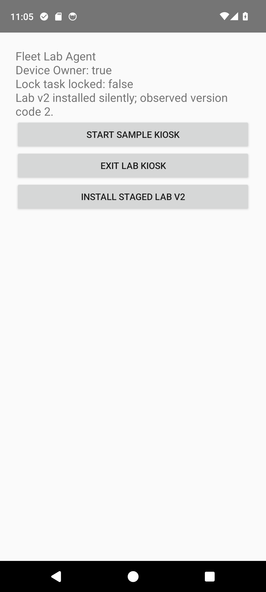
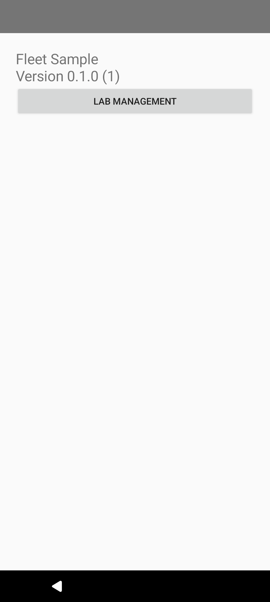
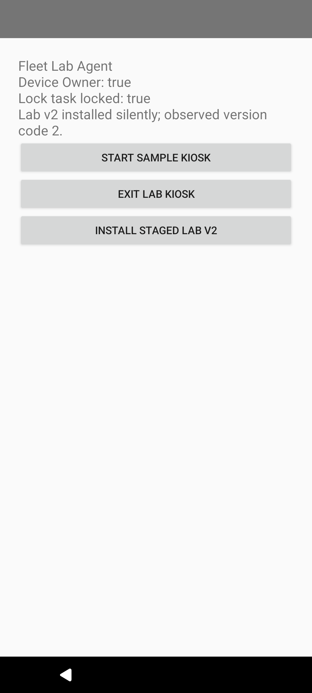
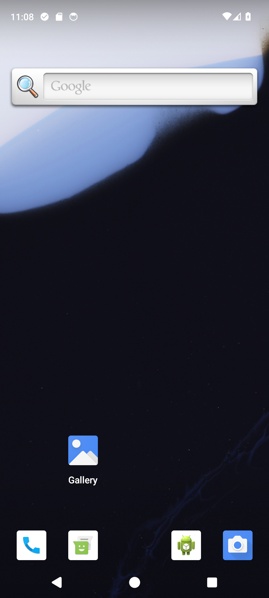

2026-10-16T08:02:41.128142+00:00 | emulator-5554 | failed
New recorded rerun of the lab checks. Assertions and command transcript
Command failed (137): /Users/michaelnwanna/Library/Android/sdk/platform-tools/adb -s emulator-5554 shell uiautomator dump /sdcard/fleet-evidence-window.xml ; failure capture: Command failed (137): /Users/michaelnwanna/Library/Android/sdk/platform-tools/adb -s emulator-5554 shell uiautomator dump /sdcard/fleet-evidence-window.xml ; recording finalization: Command failed (1): /Users/michaelnwanna/Library/Android/sdk/platform-tools/adb -s emulator-5554 pull /sdcard/fleet-runtime-evidence.mp4 /Users/michaelnwanna/Documents/Projects/Github/custom-android-mdm-agent/artifacts/android/20261016T080241.124741Z-update/update.mp4 adb: error: failed to stat remote object '/sdcard/fleet-runtime-evidence.mp4': Input/output error



